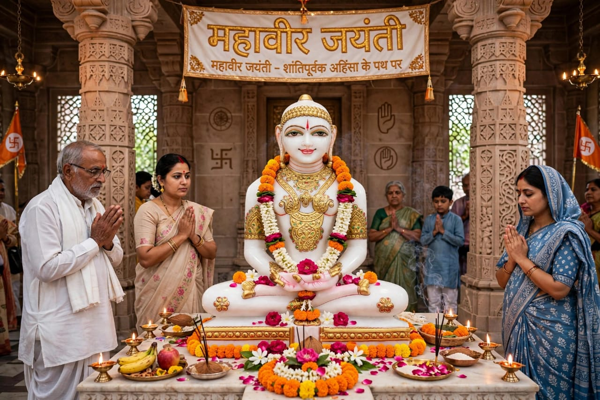
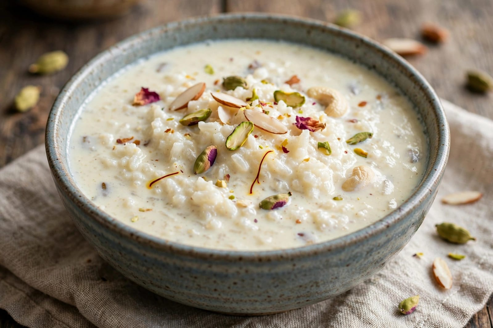
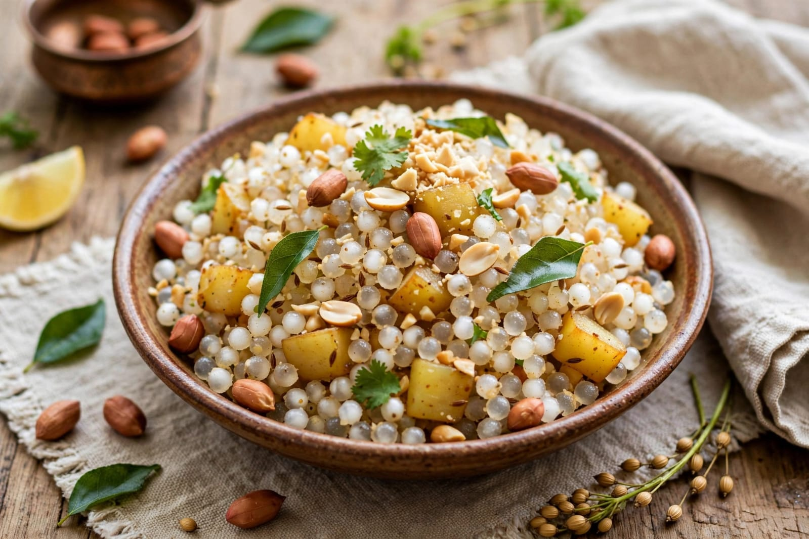

About Mahavir Jayanti
Mahavir Jayanti is an important festival celebrated by Jains. It marks the birth anniversary of Lord Mahavira. Lord Mahavira was the twenty-fourth Tirthankara of Jainism. He is an important spiritual teacher in Jain tradition. Mahavir Jayanti is celebrated with great devotion and respect. The festival reminds people of the teachings of Lord Mahavira. He taught the importance of non-violence. He also taught truth and self-discipline. Jain devotees follow the principles taught by Lord Mahavira. The festival is observed in many parts of India. Devotees visit Jain temples on this special day. Temples are decorated beautifully. Special prayers and religious ceremonies are performed. Devotees offer prayers and listen to religious teachings. Processions are also organized in many places. A statue or image of Lord Mahavira may be carried during the procession. People decorate the streets and temples. Religious songs and prayers are performed. Many devotees observe fasting on this day. Some people follow simple and vegetarian food traditions. Charity and helping people in need are encouraged. The festival promotes kindness and compassion. It reminds people to respect all living beings. Mahavir Jayanti has great spiritual importance. It encourages people to live a peaceful life. It also teaches people to control anger and greed. Lord Mahavira emphasized the importance of self-control. He taught people to avoid causing harm to living beings. His teachings continue to influence Jain communities. People remember his life and spiritual journey. The festival is celebrated with faith and devotion.
Mahavir Jayanti begins with special prayers and religious activities. Devotees visit Jain temples with their families. Religious ceremonies are performed in many temples. The teachings of Lord Mahavira are discussed. Devotees listen to stories about his life. Special processions are organized in different cities. People participate in the processions peacefully. Jain temples are decorated with flowers and lights. Devotees offer flowers and other traditional offerings. Some people organize charitable activities. Food and other useful items may be distributed to people in need. The festival gives importance to service and compassion. Many devotees spend time in prayer and meditation. Fasting is followed by some people according to their traditions. Vegetarian food is an important part of Jain traditions. People avoid harming animals and other living beings. Mahavir Jayanti reminds people about Ahimsa. Ahimsa means non-violence and respect for life. Lord Mahavira also taught the importance of truth. He encouraged people to live honestly. He taught that people should control their desires. Self-discipline is an important part of his teachings. Jain monks and scholars may give religious talks. Children learn about the life and teachings of Lord Mahavira. Families visit temples together. The festival brings members of the Jain community together. It creates an atmosphere of peace and devotion. People remember the values of kindness and simplicity. The teachings encourage people to live responsibly. Mahavir Jayanti is an important religious festival for Jains. It spreads the message of peace, non-violence and compassion.
Mahavir Jayanti is celebrated by people of different age groups. Children learn about Lord Mahavira and his teachings. Young people participate in religious and community activities. Elders guide families in traditional practices. The festival teaches respect for all living beings. It encourages people to follow a peaceful way of life. Devotees pray for peace and spiritual development. People try to practice kindness in their daily lives. Charity and helping others are important activities. The festival encourages simple and disciplined living. It teaches people to avoid unnecessary violence. It also promotes honesty and self-control. Lord Mahavira's teachings emphasize compassion. They encourage people to understand and respect others. Mahavir Jayanti preserves important Jain traditions. It brings families and communities together. Religious programs create awareness about Jain philosophy. People remember the importance of Ahimsa. The festival spreads a message of peace and harmony. It encourages people to live with kindness and responsibility. Mahavir Jayanti is a meaningful festival of Jainism. It is celebrated with devotion, prayer and community activities.
Special Foods

Kheer
Kheer is a traditional sweet dish prepared with milk and rice.

Sabudana Khichdi
Sabudana khichdi is a simple dish commonly eaten during fasting.
Puri
Puri is a popular Indian food served during special occasions.